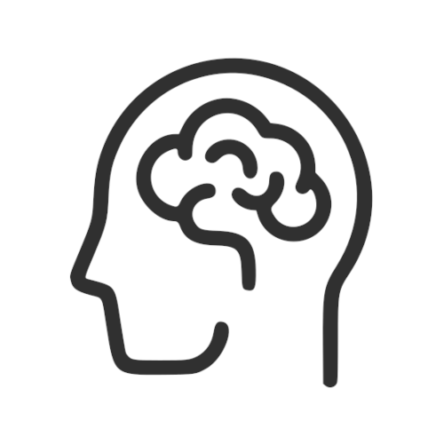

Neurowissenschaft Computerlab
Admin
Übersicht
Leistungskontrollen
Zulip Forum
Kapitel
Verhaltensexperiment mit PsychoPy
Daten importieren
Data cleaning
Daten bearbeiten und zusammenfassen
Signal Detection Theory: I
Signal Detection Theory: II
Reaktionszeiten: I
Reaktionszeiten: II
Evidence Accumulation Models: I
Slides
1. Sitzung (22.02.2022)
2. Sitzung (01.03.2022)
3. Sitzung (08.03.2022)
4. Sitzung (15.03.2022)
5. Sitzung (22.03.2022)
6. Sitzung (29.03.2022)
7. Sitzung (05.04.2022)
8. Sitzung (12.04.2022)
9. Sitzung (26.04.2022)
Übungen
Übung 1
Übung 2
Übung 3
Übung 4
Übung 5
Lösungen
Übung 3: Lösung

Neurowissenschaft Computerlab
Frühjahrssemester 2022
Zulip Forum
Mail